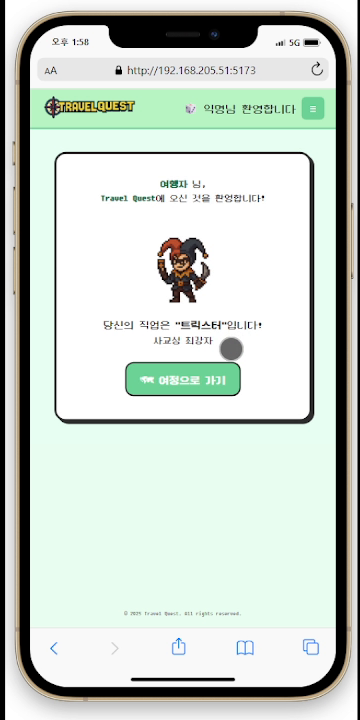
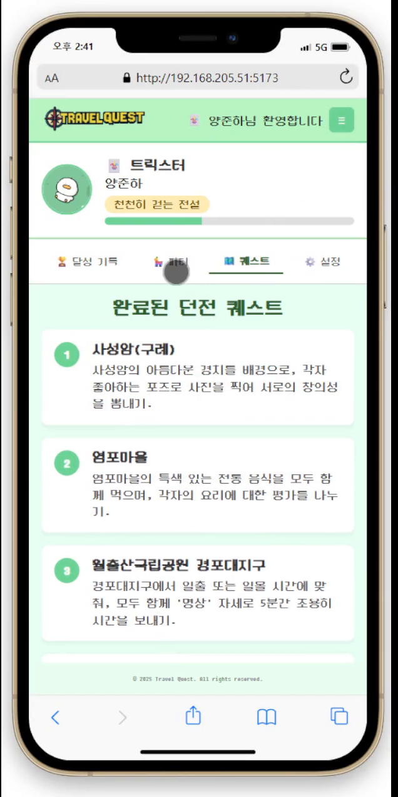

Travel Quest
Side Project — 1
여행 RPG — MBTI 직업 · 던전 · 퀘스트
풀스택 (2인)
SSAFY 13기 관통

MBTI 결과 → 8직업 중 1개 배정

던전 탐색 — Kakao Map 마커

던전 상세 · 직업군별 파티 모집

LLM이 만든 퀘스트 · 인증 제출
KEY DELIVERABLES
- 던전 10개 / 일 자동 생성 — 매일 00시 스케줄러 → MySQL 프로시저
- 관광지당 퀘스트 1개 LLM 자동 생성 + 개수 검증 계층
- 4단계 진행 상태 — MATCHING → IN_PROGRESS → COMPLETED / FAILED
- 사진 인증 워크플로 — 제출(PENDING) → 관리자 승인/반려
- 파티 정원 3단계 검증 — 총원 → 중복 → 직업군별 정원
- 규모 — 테이블 18개 · MyBatis 매퍼 11종
기획 — 왜 RPG인가
2030 혼행·자유여행은 늘었지만 동행자를 구하는 경로는 당근·오픈카톡 같은 범용 채널에 머물러 있었습니다.
여행을 RPG로 치환해 참여 문턱을 낮추고, 역할(직업)을 명시해 파티 구성을 예측 가능하게 만들었습니다.
직업 = MBTI 8종 · 던전 = 여행지+기간 · 퀘스트 = 여행지 미션 · 파티 = 동행 모집(직업군별 정원)
직업 = MBTI 8종 · 던전 = 여행지+기간 · 퀘스트 = 여행지 미션 · 파티 = 동행 모집(직업군별 정원)
본인 담당 — 던전 · 퀘스트 · 지도
- 던전 자동 생성 — 기간(0~8일)에서 난이도·필요 명소 수를 역산, 저장 프로시저
create_dungeon_with_attractions로 지역 랜덤 배정 - 퀘스트 자동 생성 — Spring AI ChatClient(gpt-4o-mini)에 관광지 JSON 전달, 코드펜스 제거·개수 불일치 시
QuestGenerationException으로 중단 - 지도·인증 — Kakao Map 마커, 인증 사진 UUID 저장(10MB 제한) → 관리자 승인/반려
- 화면 — 던전 탐색·상세·퀘스트·인증 Vue 화면 구현
팀 공동 구현 (2인)
- 인증 — Kakao/Naver OIDC + JWT (Access 15분 · Refresh 14일, Redis 블랙리스트)
- 실시간 — STOMP 파티 채팅, 메시지는 MongoDB · 접속 상태는 Redis
- 파티 — 직업군별 정원 3단계 검증(총원·중복·모집 직업군)
- 규모 — Java 128파일 · MyBatis 매퍼 11종 · 테이블 18개 · Vue 35파일
노면표지 훼손 탐지 — 횡단보도 · 과속방지턱
AI · 데이터 (3인)
KSC2024 장려상

검증 데이터 예측 — crosswalk 0.8 / damaged_crosswalk 0.6 / damaged_speed_bump 0.9 (클래스별 conf 표기)

100 epoch 학습 곡선 — box/cls loss 감소, mAP50 0.042 → 0.806
0.78
PRECISION
0.75
RECALL
0.80
mAP50
0.59
mAP50-95
- 문제 — 도로 시설물 점검이 사람 눈에 의존해 시간·비용이 크고, 훼손을 조기에 못 잡음. 주행 영상만으로 위치 + 훼손 여부를 함께 판별하는 모델을 목표로 함.
- 데이터 — AI Hub 「도로 로드마크 인식용 주행 영상」 온전 23,000장(70GB) + 비온전 36,000장(110GB) ≈ 59,000장 중 주간(
time = light) 28,000장을 학습에 사용 (정상 10,000 · 훼손 18,000). - 전처리 — 라벨 bbox와 이미지 크기가 어긋난 사례가 잦아, segmentation 폴리곤을 [x,y] 쌍으로 풀어 이미지 크기로 0~1 정규화 후 YOLO 포맷으로 변환. 클래스는 4종(
crosswalk·speed_bump·damaged_crosswalk·damaged_speed_bump). - 학습 — YOLOv8s, 100 epoch, imgsz 640, batch 16, 8×Tesla P100 서버. 1차 학습(42 epoch 중단, mAP50 0.748) 후 설정을 정리해 2차에서 mAP50 0.806으로 마무리.
- 성과 — 논문 「딥러닝 기반 횡단보도 및 과속방지턱 인식 및 훼손여부 탐지」로 2024 한국소프트웨어종합학술대회(KSC2024) 게재, 학부생/주니어 논문경진대회 장려상.
후속 — 표지판·신호등 등 다른 도로 시설물로 클래스 확장, 데이터 다양화로 일반화 성능 보강 (논문 결론)